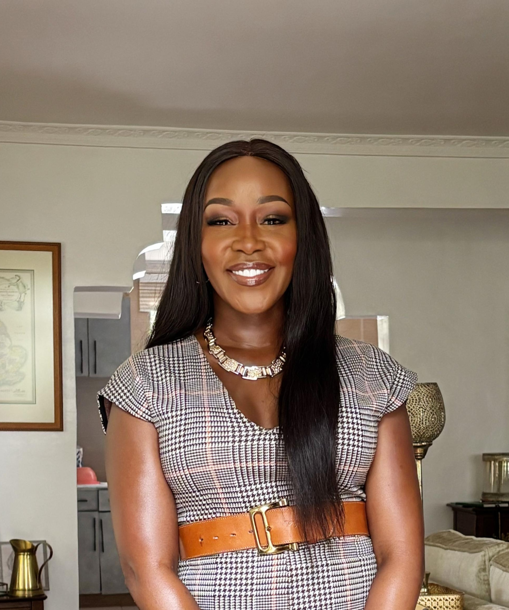

CNBC Africa
Reported and produced programmes including Kenya This Week and Destination Kenya.
MEDIA LEADER · FOUNDER · GLOBAL MODERATOR
Award-winning media leader, entrepreneur and global moderator with more than 18 years of experience across African media, business and public life.
Discover her story ↓
alt="Terryanne Chebet" >Building platforms. Shaping conversations. Creating greater understanding of Africa.
ABOUT TERRYANNE
Terryanne Chebet is an award-winning media leader, entrepreneur and global moderator with more than 18 years of experience working across African media, business and public life.
She has built her career at the intersection of media, business, leadership and influence, moving from some of Africa's leading newsrooms to building platforms that shape how the continent is understood.
BUILDING SABLE AFRICA
FOUNDER & EDITOR IN CHIEFTerryanne founded Sable Africa with a clear ambition: to build better intelligence about Africa.
The platform brings together journalism, data and technology to provide a deeper understanding of African economies and the forces shaping them.
As Founder and Editor in Chief, she leads Sable Africa's editorial, product, technology and commercial direction.
FROM THE NEWSROOM
Before building Sable Africa, Terryanne spent nearly two decades in journalism and broadcasting.
Reported and produced programmes including Kenya This Week and Destination Kenya.
Launched and hosted Citizen Business Centre and covered African business and economic affairs.
Served as an inaugural business news anchor.
Led the business desk and hosted Business Central and Meet the Boss.
Built experience in broadcasting and public affairs journalism.
“A front row seat to the people, businesses and ideas shaping Africa.”
FROM MEDIA TO ENTREPRENEURSHIP
Terryanne has also built and led media organisations.
As General Manager of Metropol TV, she launched and led Kenya's youth-focused business channel, building a team of 27 professionals and overseeing strategy, operations, production, partnerships and financial management.
She has since taken that experience into entrepreneurship, building platforms that connect audiences with ideas, information and opportunities.
GLOBAL MODERATOR
Terryanne is an experienced global moderator, interviewer and speaker.
Her conversations bring together CEOs, government leaders, investors, policymakers and international institutions.
Her style is informed by her years as a journalist: curious, informed and unafraid to ask the question behind the question.
SPEAKER
Terryanne speaks on the forces shaping Africa's economies, businesses, media and leadership.
Her experience across journalism, entrepreneurship and African business gives her a perspective that connects the headline to the bigger picture.
Africa's Business and Economic Future
Leadership and Influence
The Future of African Media
Business, Markets and Investment
Technology and Innovation
Women and Leadership
BEYOND THE HEADLINES
Terryanne is passionate about creating platforms and opportunities for the next generation.
She founded Girls in PR, an initiative focused on mentorship, training and professional development for young women entering the industry.
She is also a former Bloomberg Africa Leadership Initiative Fellow.
MA Communication (Ongoing)
United States International University Africa
Bachelor of Arts in Journalism
United States International University Africa
Diploma in Television and Film Production
in Broadcast Journalism
School of Information, Advertising and Diplomacy
THE WORK TODAY
Today, Terryanne's work is focused on building platforms, shaping conversations and creating greater understanding of Africa.
Through Sable Africa, she is building a new generation of business intelligence for the continent.
Through her speaking and moderation work, she brings African perspectives into global conversations.
And through her continued work in media, she remains focused on one question:
TERRYANNE CHEBET
Media Leader. Founder. Global Moderator.